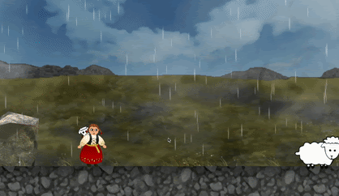

I’m a masters student in computer science at ETH Zürich but worked as a software developer in Iceland for
more than a year before my studies. I did my bachelor in computer science at Reykjavik University in Iceland following a
research-based track mixed with practical software engineering courses useful for my first steps in the industry. At ETH, I have been focusing on software engineering, data management systems,
machine learning, and how these topics intersect. If you have read this far about me, I want to welcome you to my webpage! My page currently provides an overview of my part-time projects and research
activities over the last few years, but you can also check out my LinkedIn profile
for more details on my work experience or to send me a message.
In addition to the first web application for Exquisitor Web App v1.0 (see project details below), another web app, Exquisitor Web App v2.0, was designed and implemented specifically to explore large image collections using eye-tracking. The Web App was largely based on Exquisitor Web App v1.0 system design, but the front end was redesigned for easier navigation using eye-tracking. The project was a collaboration between me, Hanna Ragnarsdóttir, and Vigdís Birna Þorsteinsdóttir during summer 2018. Vigdís implemented the new version of the front end and configured the eye-tracking functionality for the web application. We then jointly designed and conducted user experiments to compare the new interface with different input devices to analyse the user experience using eye-tracking compared to standard input devices, such as mouse and keyboard. We demonstrated the system at the Researcher's Night event in Iceland. The source code is available on Github.
Exquisitor Web App v1.0
Exquisitor is a browser-based media explorer capable of learning user preferences in real-time during interactions with the 100 million images of the YFCC100M collection.
The system owes its efficiency to Blackthorn, an interactive multimodal learning engine and high-dimensional indexing algorithm called eCP. Exquisitor can complete each interaction round in less than 10 ms, using only a single CPU core with a modest memory footprint, which opens up large-scale multimedia analytics to consumer PCs, as well as multi-user and multi-platform environments. Below is a demo of our system.
The project involved implementing a web application to explore the underlying algorithm of Exquisitor in action with real images from the YFCC100M. The application was implemented by Hanna Ragnarsdóttir and me on top of our Bachelor project at Reykjavik University during three weeks in the spring of 2018. I implemented the front-end using React JS library and configured the image API with Apache while Hanna developed the learning API for the underlying algorithm using Python and Flask. We both designed the system architecture, UI and the underlying algorithm. The source code is available on Github for the front end
and the learning API.
Sheep of Iceland
Sheep of Iceland is a 2D side-scrolling indie game influenced by the nature and culture of Iceland. The player is an Icelandic shepherd girl called Freyja. She walks around Iceland to collect her lost sheep. The sheep roam free in Iceland, but some of them have been stolen by an angry troll. The goal of the game is to collect all sheep that belong to Freyja. To save her sheep from the troll, Freyja has to solve puzzles asked by the troll throughout the game. An elf, called Hulda, helps Freyja outsmart the troll by leaving magic notes to solve the puzzles. The troll's riddles are related to Icelandic history, culture and nature.
Sheep of Iceland is a Unity game designed and developed by me, Hulda Lilja Hannesdóttir, and Agnes Jóhannesdóttir over three weeks in Reykjavik University's Computer Game Design & Development course in 2017. Check out our Github repository for more details on the source code.

Research
My research has evolved around information retrieval for large multimedia collections, interactive multimodal learning, and high-dimensional indexing. Recently I have worked more on evaluation methods for generative machine learning models focusing on human evaluation strategies.
Below is an overview of my recent research activities, such as my bachelor and master thesis, paper publications and conference participation.
Thórhildur Thorleiksdóttir. Understanding Human Potentials for Evaluating Generative Models. Master Thesis. ETH Zürich. 2021. [PDF]
Omar Shahbaz Khan, Björn Þór Jónsson, Stevan Rudinac, Jan Zahálka, Hanna Ragnarsdóttir, Thórhildur Thorleiksdóttir, Gylfi Þór Guðmundsson, Laurent Amsaleg & Marcel Worring. Interactive Learning for Multimedia at Large. In: Jose J. et al. (eds) Advances in Information Retrieval. ECIR 2020. Lecture Notes in Computer Science, vol 12035. Springer, Cham. [PDF]
Hanna Ragnarsdóttir, Thórhildur Thorleiksdóttir, Omar Shahbaz Khan, Björn Þór Jónsson, Gylfi Þór Guðmundsson, Jan Zahálka, Stevan Rudinac, Laurent Amsaleg & Marcel Worring. Exquisitor: Breaking the Interaction Barrier for Exploration of 100 Million Images. Proceedings of the 27th ACM International Conference on Multimedia. 2019. [PDF]
Hanna Ragnarsdóttir & Thórhildur Thorleiksdóttir. Exquisitor: High-Performance Interactive Multimodal Learning with Approximate High-Dimensional Indexing.
Women in Machine Learning Poster Session. 2018.